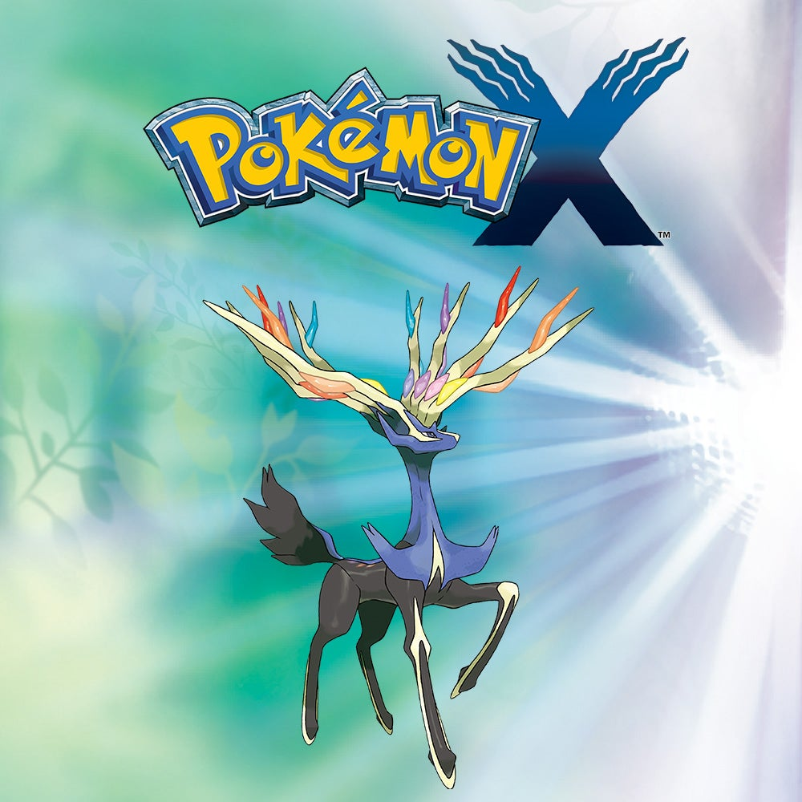
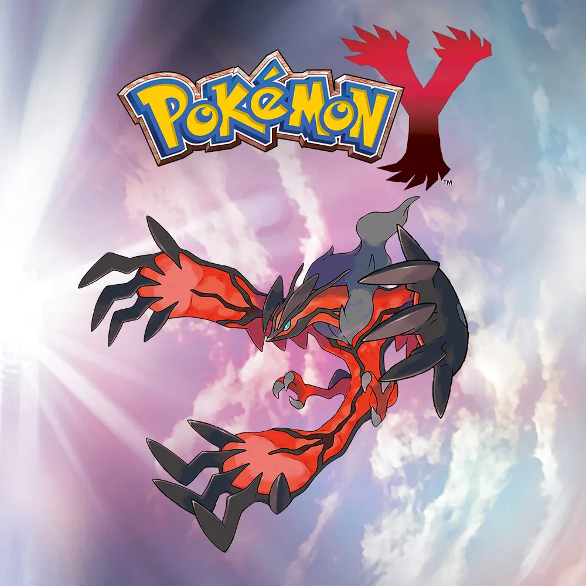
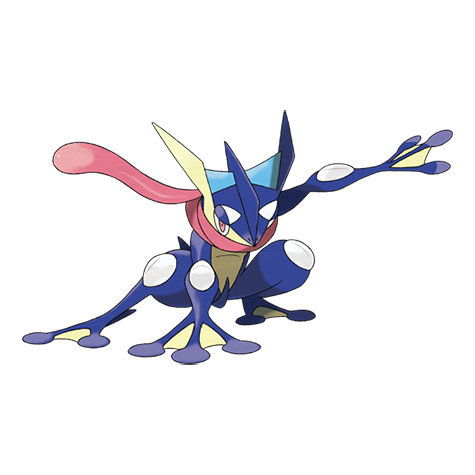
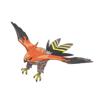
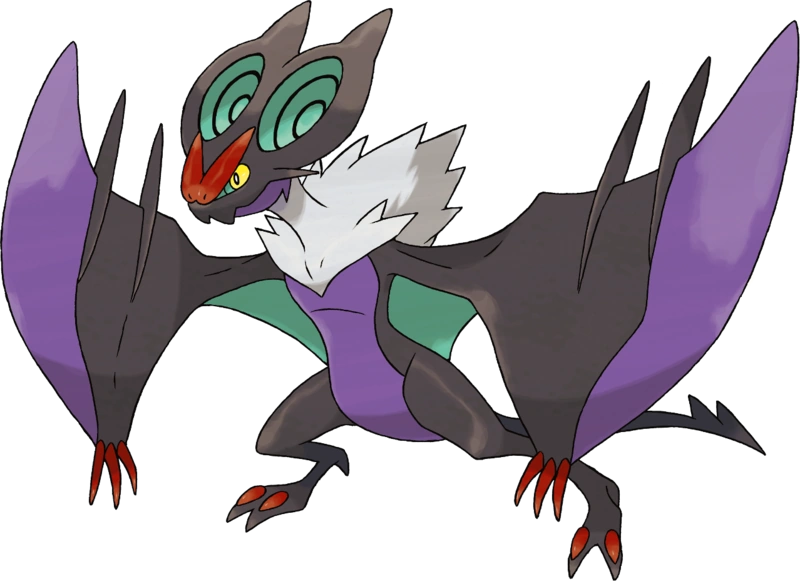

Explore a Região de Kalos
Capture Pokémon, receba estatísticas e tenha sua jornada acompanhada por KalosDex
Sobre o KalosDex
Pokémon X e Y apresentam a região de Kalos, um lugar marcado por cidades elegantes e Pokémon novos
fascinantes.
Inspirada na França, Kalos oferece uma jornada cheia de descobertas, desafios e
segredos para quem deseja viver uma aventura Pokémon moderna.
Com a KalosDex, você encontra informações úteis para sua gameplay, como dados de Pokémon, tipos,
evoluções, vantagens em batalha e conteúdos que facilitam sua jornada do início até a Liga Pokémon.


Principais Pokémon da região

Greninja
Tipo: Água Sombrio

Talonflame
Tipo: Fogo Voador

Haxorus
Tipo: Dragão

Sylveon
Tipo: Fada

Noivern
Tipo: Voador Dragão
Ferramentas completas para sua jornada
Tudo o que você precisa para dominar a região de Kalos em um só lugar.
📊 Dashboard
Visualize todas as suas estatísticas e compare com outros jogadores em um painel intuitivo.
🔐 Login Seguro
Acesse sua conta de forma segura e rápida.
📈 Estatísticas
Analise dados completos sobre força, raridade e habilidades.
👤 Perfil
Personalize sua experiência e acompanhe suas conquistas e de outros usuários
Pronto para começar sua aventura?
Junte-se a milhares de exploradores e descubra um mundo de possibilidades
Cadastrar-se grátis